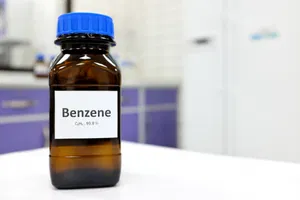
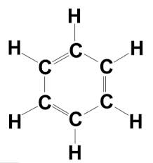
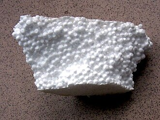

El Benceno

El benceno (C₆H₆) es un líquido incoloro con un olor aromático característico. Presenta un punto de ebullición aproximado de 80 °C y es menos denso que el agua. Es poco soluble en agua, pero se disuelve fácilmente en compuestos orgánicos.
A diferencia de los alcanos y alquenos, el benceno no suele sufrir reacciones de adición porque eso rompería su estabilidad aromática. En su lugar, presenta principalmente reacciones de sustitución electrofílica aromática.
En estas reacciones, un átomo de hidrógeno del anillo es sustituido por otro grupo químico, conservando la estructura estable del anillo.
Ejemplos: Nitración y Halogenación.


El benceno es base para la fabricación de numerosos productos. El poliestireno, utilizado en envases y objetos plásticos, se deriva del estireno, que proviene del benceno.
Además, la gasolina contiene pequeñas cantidades de benceno y derivados como el tolueno, que ayudan a mejorar el rendimiento del combustible.
La exposición prolongada al benceno puede afectar el sistema hematopoyético, encargado de producir células sanguíneas. Diversos estudios han demostrado que puede aumentar el riesgo de leucemia y otros trastornos sanguíneos.
Su uso industrial se intensificó desde finales del siglo XIX con la industria del alquitrán de hulla y se expandió durante el siglo XX con la producción de combustibles y materiales sintéticos.
Es importante evitar la inhalación de vapores de combustibles y mantener espacios ventilados cuando se manipulan productos derivados del benceno. La información y la prevención son claves para proteger la salud.